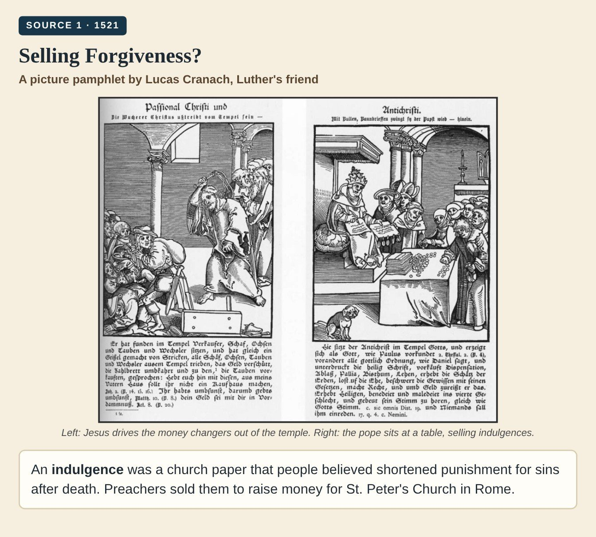

How it works: read the source pages → answer the question about today's big idea → read the fact file → write 1–2 sentences. Done = all parts green, then turn in at the bottom.
Word help (tap to open)
- Indulgence = a church paper people believed shortened punishment for sins
- Thesis = a statement you are ready to argue for
- Recant = take back what you said
- Outlaw = someone the law no longer protects
- Peasants = poor farmworkers
- Primary source = something made by people who lived at the time: a letter, a speech, a picture, a law

Click the page to make it bigger.
Turn in your work
Your work saves on this device, so you can come back later. Your teacher sees it after you turn it in.
Sources: Lucas Cranach, Passional Christi und Antichristi (1521); Martin Luther, 95 Theses (1517) and speech at Worms (1521), translations from Works of Martin Luther (1915); woodcut of Luther at Worms (1556); Titian workshop, portrait of Charles V (1548); The Twelve Articles (1525); Luther, Against the Murderous, Thieving Hordes of Peasants (1525); Cranach, Luther engraving (1520). All images public domain, via Wikimedia Commons.